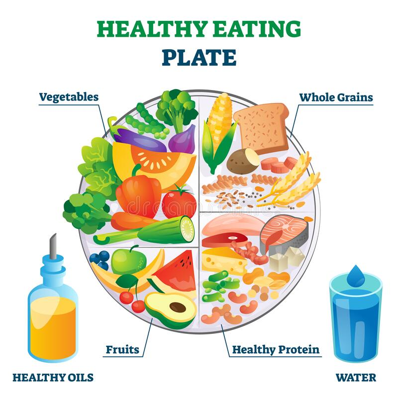

healthy foods
A healthy diet is a diet that helps maintain or improve overall health. A healthy diet provides the body with essential nutrition: fluid, macronutrients, micronutrients, and adequate food energy. A healthy diet may contain fruits, vegetables, and whole grains, and may include little to no processed food or sweetened beverages. The requirements for a healthy diet can be met from a variety of plant-based and animal-based foods, although a non-plant source of vitamin B12 is needed for those following a vegan diet. Various nutrition guides are published by medical and governmental institutions to educate individuals on what they should be eating to be healthy. Nutrition facts labels are also mandatory in some countries to allow consumers to choose between foods based on the components relevant to health.
unhealthy foods
.png)
What is an unhealthy diet? Diets high in sugars, saturated and trans- fats, low fibre foods and high-sugar drinks contribute to non-communicable diseases (NCDs) and other health problems. High intake of fast food and processed foods increases these health risks. Eating junk food on a regular basis can lead to an increased risk of obesity and chronic diseases like cardiovascular disease, type 2 diabetes, non-alcoholic fatty liver disease and some cancers.